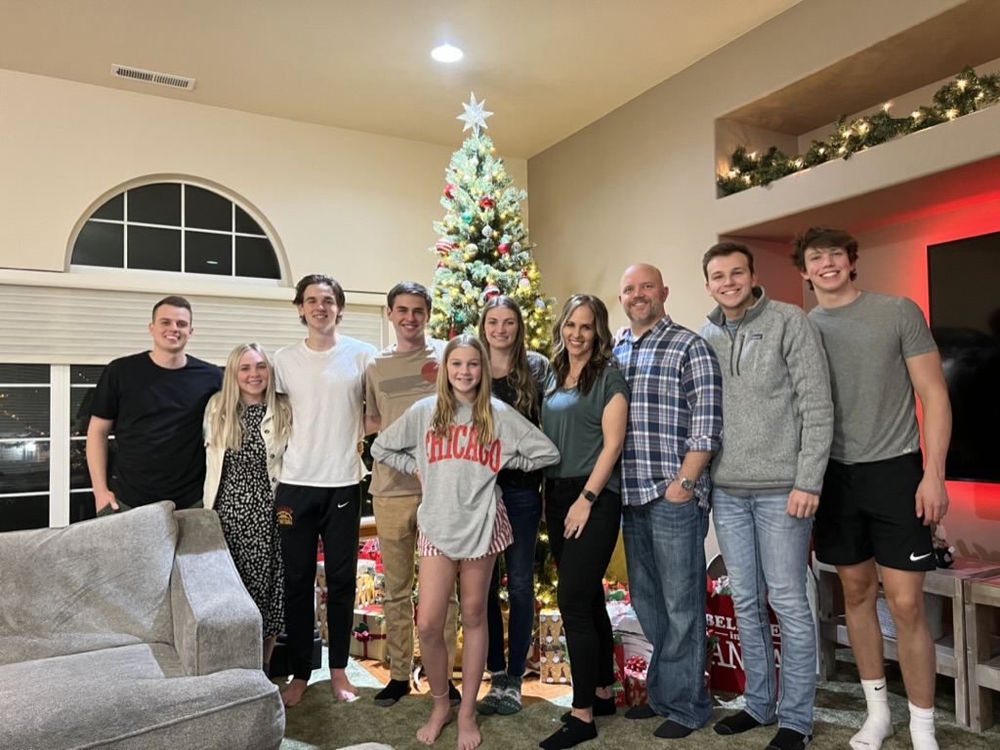
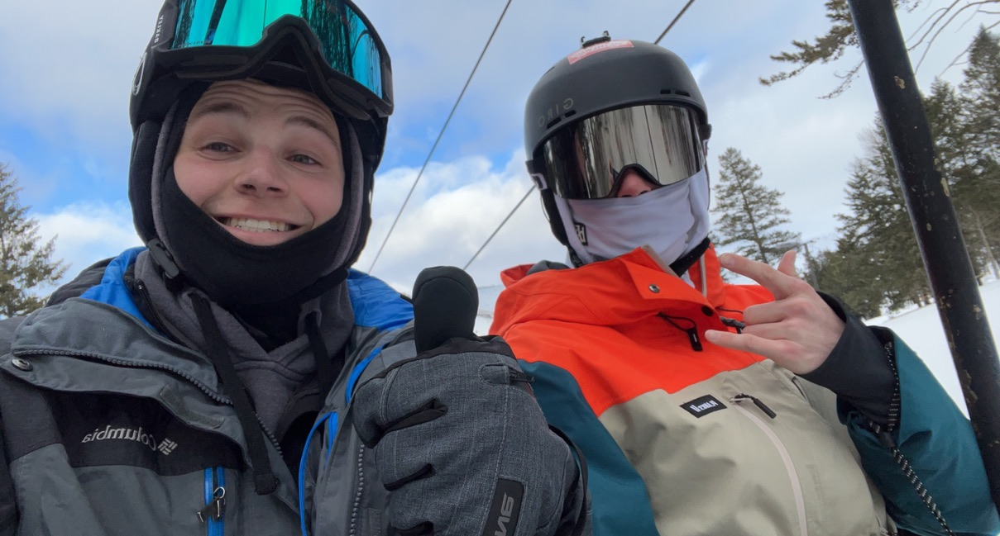
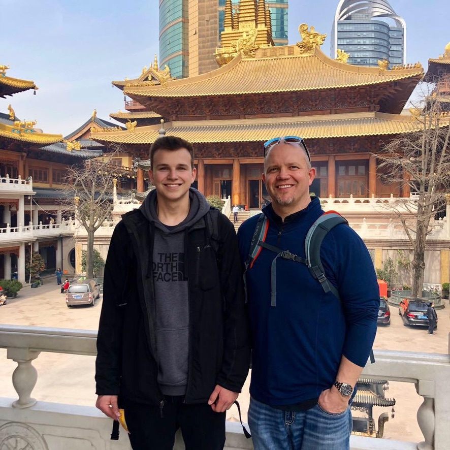
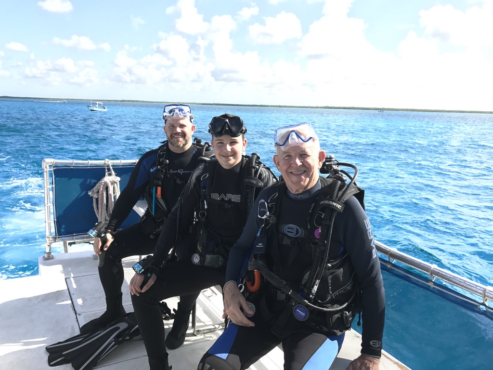
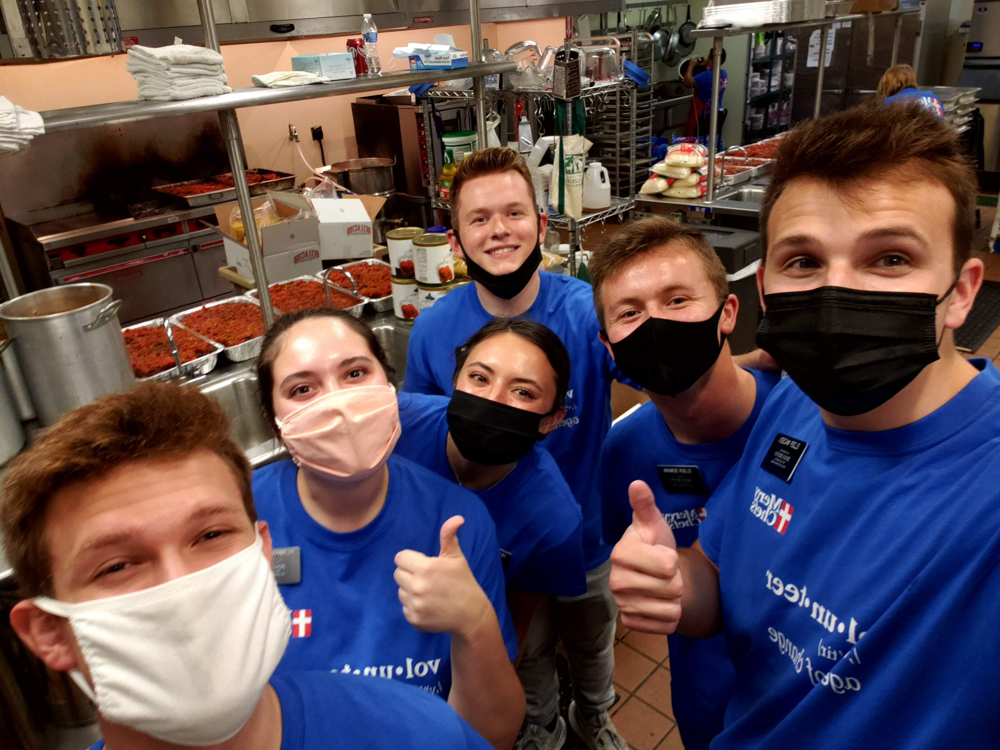
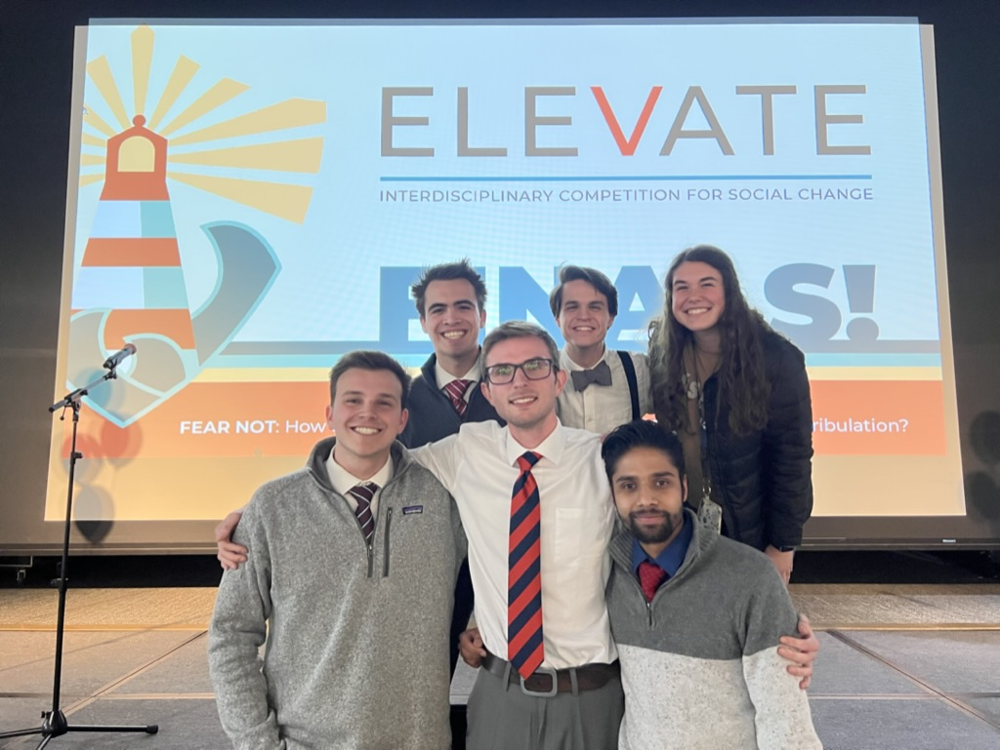

Ryan Madsen
Software Engineering Student
About Me
Hi! My name is Ryan Madsen. I am from Kennewick (aka Tri-Cities), Washington where I graduated from Kamiakin High School and Columbia Basin College with an associate arts degree in general studies. I then went and served as a full-time missionary for the Church of Jesus Christ of Latter-day Saints in McAllen, Texas. I returned from my mission in September 2021 and am now working toward becoming a software engineer! I am currently a junior at Brigham Young University - Idaho. I am studying Software Engineering with an emphasis in software project management. I have lots of different hobbies including skiing, SCUBA diving, ATV riding, and many more.





